Johns Hopkins University
Master's Degree | 2021 - 2023
Coursework: Statistical Learning, Deep Learning, Object Oriented Software Engineering, Artificial Intelligence, Algorithms, Computer Integrated Surgery
Coursework: Statistical Learning, Deep Learning, Object Oriented Software Engineering, Artificial Intelligence, Algorithms, Computer Integrated Surgery
Coursework: Inverse Numerical Methods, Convex Optimization, Probability and Stochastic Processes
GeForce Now Cloud Gaming analytics team.
Developing a library in C++ for Image-guided surgical procedures.
Improved BrewRight, ABI’s legal analytics platform for detecting fraudulent transactions for financial compliance
Built an efficient snapshot generation system for high-frequency trade data.
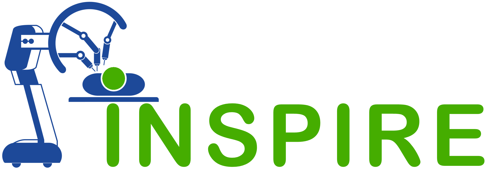
Worked on building a robotic system for servo-guided eye-surgery

Built a data-driven work-in-progress stock prediction model.
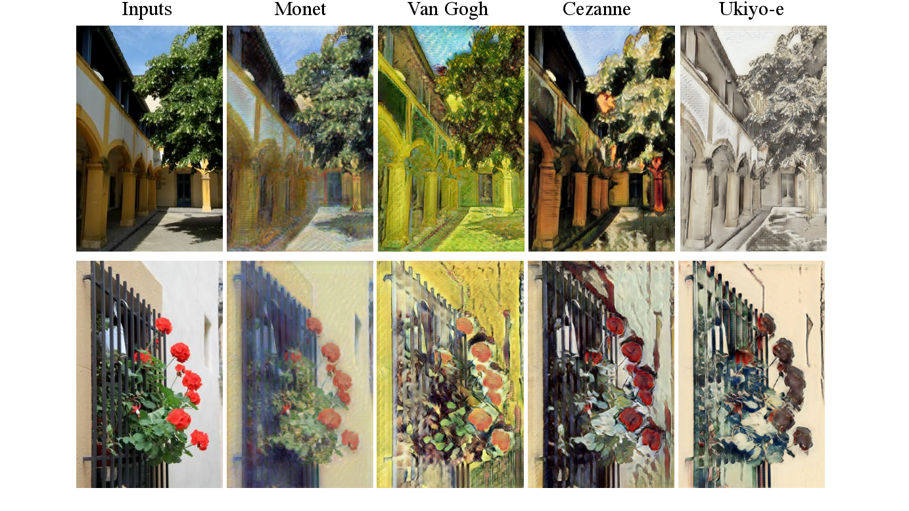
The aim of Neural Style Transfer is to give the Deep Learning model the ability to differentiate between the style representations and content image. Our take on generating new variations of existing art pieces
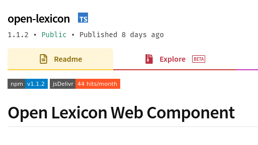
A web-component and an e-reader utlising the web-component to modify html elements associated with any webpage using an interactive toolbar
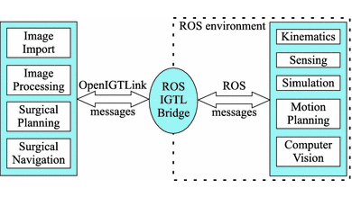
Direct communication between ROS and open-IGTL. Updated parameters sent to IGTL when ROS2 parameter values are updated or new parameters are created.
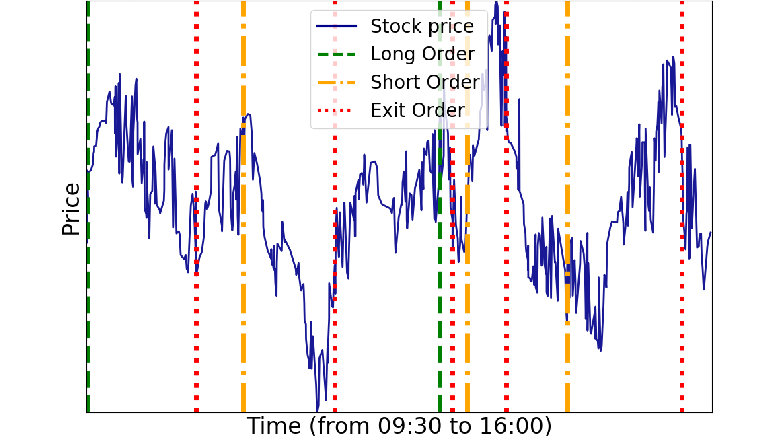
Efficient generation of limit order book from millisecond trade data using a custom heap based algorithm.
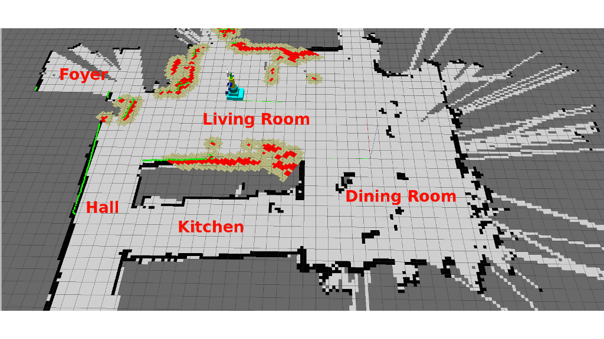
TSimultaneous localisation and mapping of rover in an enclosed environment based on laser sensor readings - using bayesian estimates.
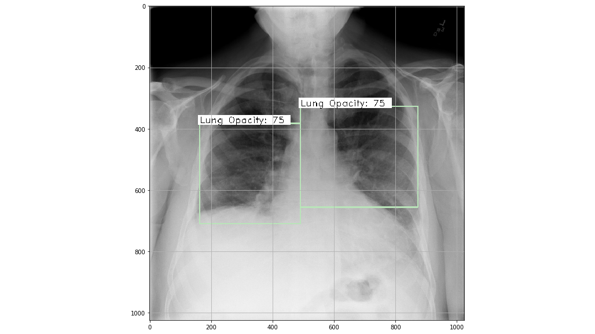
Tackled as an object detection problem, with only one type of image to detect. Yolo-v3 from Darknet was used. Achieved an IoU of 46.97% and MAP value of 35.44%.
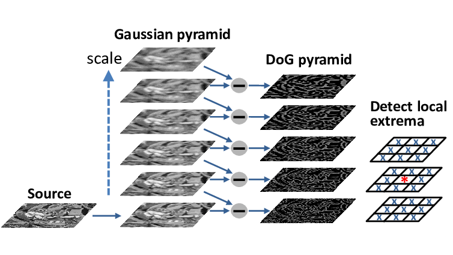
Investigated video cameras as an inexpensive way for remote vibration analysis; built in Python using OpenCV. Utilized scale-invariant features and object tracking algorithms to extract the motion signal from video frames
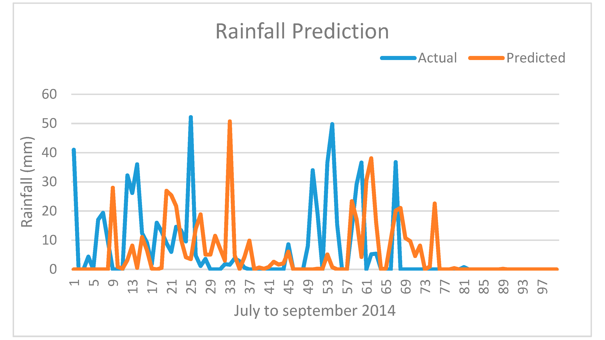
Developed an ML model for prediction of Indian rainfall on monthly and seasonal time scales. Used RNNs to forecast rainfall for June to Sept (ISMR) by feeding data on rainfall and sea surface temps
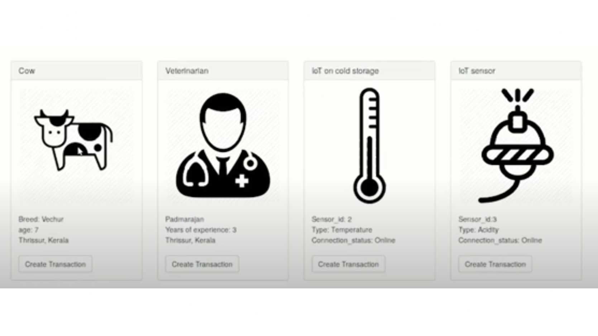
Ideated, pitched, & showcased Dairy Folk: A start-up focusing on improving livestock management using unique IDs. Enabled continuous health monitoring of livestock by decentralizing storage of data for enhanced transparency
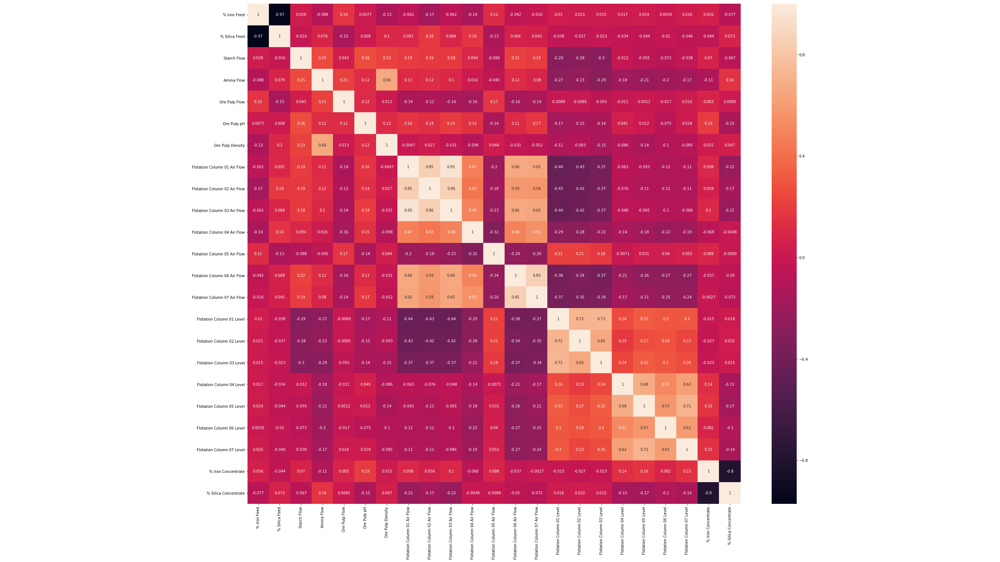
Employed random forest classifiers, neural networks and XGBoost in an ensemble to predict the output Silica concentrate based on input ore properties, ore pulp condition, air flow rate & other process parameters
Created a web crawler using selenium & bs4 for maintaining offline copy of course documents from Moodle. Wrote a daemon to refresh the offline version daily; File system updated to match changes in course structure
Thank you for visiting my page! Feel free to reach out to me.